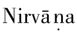

甲 “乐闻于斯”的来信
鲁迅先生：
在黎锦明[449]兄的来信上，知道你早已到了上海。又近日看《语丝》，知岂明先生亦已卸礼部总长[450]之任，《语丝》在上海出版，那位礼部尚书不知是何人蝉联下去呢？总长近日不甚通行，似乎以尚书或大臣为佳，就晚生看来。
不管谁当尚书了吧，我想，国粹总得要维持，你老人家是热心于这件工作的，特先奉赠礼物二件，聊表我之“英英髦彦，亦必有轶群绝伦”的区区之见也。
宣言是我三月前到会里恭恭敬敬索得来的。会里每晚，几乎是每晚有名人，遗老讲经的；听者多属剪发髦生——这生字是两性通用的——我也领教过一次了，情形另文再表，有空时再来。前几晚偶然又跑过老靶子路的会址门前，只见灯光辉映，经声出自老而亮的喉咙，不觉举头一望，又发见了一纸文会的征求，深恐各界青年，交肩失之，用特寄呈，乞广为招徕，国粹幸甚。倘蒙加以按语，序跋兼之，生生世世祖宗与有荣焉。
不知你住在什么地方，近来是否住在上海，故请别人转交。祝福你。
招勉之[451]
一九二七，十二，十五，于SJ医院。
乙 筹设孔教青年会宣言
人心败坏，道德沦亡；世运浩劫，皆由此生。今我国青年处此万恶之漩涡，声色货利濡染于中，邪说暴行诱迫于外。天地晦塞，人欲横流，其不沦胥以溺者，殆无几矣！惟是，今人于水旱灾祲，则思集会以赈济，兵燹贼劫，则思练团以保卫。独于青年道德之堕落，其弊有甚于洪水猛兽者，则不知设会以补救。无亦徒知抵御有形之祸，而不知消弭无形之祸乎？同人深鉴于此，爰有孔教青年会之设，首办宣讲，音乐，游艺，体育各科，借符孔门六艺之旨。一俟办有成效，再设学校图书馆等，使我国青年皆得了解孔子之道，及得高尚学术之陶熔。庶知社会恶习之不可近；邪说暴行之所当辟；而世运浩劫，或可消弭于无形。今日之会社亦多矣，然大都皆偏于娱乐，而注重于青年之道德者甚微，惟孔子之道，如日月经天，江河行地，为吾人斯须不可离。斯会之成，必有能纳青年于正轨，而为人心世道之助者，且孔子尝言，后生可畏；又曰：以文会友，以友辅仁。我青年会之设即体孔子之意。邦人君子，傥亦乐闻于斯？！
丙 上海孔教青年会文会缘起
今试问揉罗曳縠，粉白黛绿，有以异于乱头粗服乎？今试问击烹肥，纸迷金醉，有以异于含糗羹藜乎？此不待质诸离娄易牙而皆知者也。虽然，世有刻划无盐，唐突西施者；亦有久餍刍豢，偶思螺蛤者；此岂真以美色能令目盲，盛馔能令肠腐哉？毋亦畏妆饰烹调之繁缛而已。我国之文，固西施而刍豢也；通才硕学，研精覃思，穷老尽气，仅乃十得其七八；下焉者，或至熟视而无睹；后生小儒，途径未习，但见沉沉然千门万户，以为不可阶而升也，则必反顾却走而去之。故吾谓军人畏临阵；妇女畏产育；和尚畏涅槃；秀才畏考试；皆至可怪诧之事，而实情理之所应有者也。沪上为南北绾毂，衿缨亿万，学校如林，而海内耆宿之流，寓于此者，类皆蓄德能文，不惮出其胸中所蕴蓄以诱掖后进；后进亦翕然宗之。若夫家庭之内，有贤父兄，复能广延良师益友，以为子弟他山之助，韦长孺颜之推诸贤，犹未能或之先也。夫天下事果自因生，应由响召，观于此间近时之风尚，可知中原文化，实具千钧一发之力，而英英髦彦，亦必有轶群绝伦，应时而起者。惟无以聚会之，则声气不通；无以征验之，则名誉不显；无以奖劝而提倡之，则进取不速，而观感不神。《易》曰：“君子以朋友讲习”，《论语》曰：“君子以文会友”。窃本斯旨，号召于众，俾知拭目而观西施，张口而思刍豢者，大有人在。同人不敏，即执巾栉，奉脂泽，为美人催妆，飞鞚络绎，为御厨送八珍，其又奚辞？（章程从略）
丁 “乐闻于斯”的回信
勉之先生足下。N日不见，如隔M秋。——确数未详，洋文斯用。然鲜卑语尚不弃于颜公[452]，罗马字岂遽违乎孔教？“英英髦彦”，幸毋嗤焉。慨自水兽洪猛，黄神啸吟，礼乐偕辫发以同隳，情性与缠足而俱放；ABCD，盛读于黉中，之乎者也，渐消于笔下。以致“人心败坏，道德沦亡”。诚当棘地之秋，宁啻“杞天之虑”[453]？所幸存寓公于租界，传圣道于洋场，无待乘桴，居然为铎[454]。从此老喉嘹喨，吟关关之雎鸠[455]，吉士骈填[456]，若浩浩乎河水。邪说立辟，浩劫潜销。三祖六宗，千秋万岁。独惜“艺”有“宣讲”，稍异孔门，会曰“青年”，略剽耶教，用夷变夏，尼父曾以失眠，援墨入儒，某公为之翻脸。然而那无须说，天何言哉[457]，这也当然，圣之时也[458]。何况“后生可畏”[459]，将见眼里西施，“以友辅仁”[460]，先出胸中刍豢[461]。于是虽为和尚，亦甘心于涅槃[462]，一做秀才，即驰神于考试，夫岂尚有见千门万户而反顾却走去之者哉，必拭目咽唾而直入矣。文运大昌，于兹可卜，拜观来柬，顿慰下怀。聊复数言，略申鄙抱。若夫“序跋兼之”，则吾岂敢也夫。专此布复，敬请“髦”安，不宣。
鲁迅谨白。
丁卯夏历十一月二十六日。
注 释
[448] 本篇最初发表于1927年12月31日上海《语丝》周刊第四卷第三期。
[449] 黎锦明（1905—1999） 字君亮，湖南湘潭人，小说家。曾与招勉之在广东海丰中学同事，当时常给《语丝》投稿。
[450] 礼部总长 《语丝》第一卷第三期（1924年12月1日）刊载江绍原致周作人（岂明）的通信《礼的问题》，讨论旧礼教问题，信中戏称周作人为“礼部总长”。
[451] 招勉之 广东台山人，《语丝》、《莽原》的投稿者，当时在中山大学附属中学师范科任教。
[452] 颜公 即颜之推（531—591），字介，琅邪临沂（今属山东）人，北齐文学家。初仕梁为散骑侍郎，入北齐官至黄门侍郎。后曾在周、隋任职。著有《之推集》、《颜氏家训》等。他在《颜氏家训·教子》中说：“齐朝有一士大夫，尝谓吾曰：‘我有一儿，年已十七，颇晓书疏，教其鲜卑语及弹琵琶，稍欲通解，以此伏事公卿，无不崇爱，亦要事也。’吾时俛而不答。异哉此人之教子也！若由此业，自致卿相，亦不愿汝曹为之。”按颜之推本人并非主张学鲜卑语，后来鲁迅在《准风月谈·〈扑空〉正误》中对此作了说明。
[453] “杞天之虑” 杨荫榆掉弄成语“杞人忧天”而成的语句，见杨荫榆于1925年5月14日散发的传单：《国立北京女子师范大学校长杨荫榆对于本校暴烈学生之感言》；后揭载于同年5月20日《晨报》，题为《教育之前途棘矣——杨荫榆之宣言》。原典出于《列子·天瑞》：“杞国有人，忧天地崩坠，身亡所寄，废寝食者。”
[454] 乘桴 《论语·公冶长》：“子曰：‘道不行，乘桴浮于海，从我者，其由与？’”为铎，《论语·八佾》：“天下之无道也久矣，天将以夫子为木铎。”木铎，一种木舌的铜铃，古代用以召集人民，宣布政事。
[455] 关关之雎鸠 《诗经·周南·关雎》：“关关雎鸠，在河之洲；窈窕淑女，君子好逑。”
[456] 吉士骈填 《诗经·召南·野有死麇》：“有女怀春，吉士诱之。”又《晋书·夏统传》：“士女骈填，车服烛路。”骈填，形容人数众多。
[457] 天何言哉 《论语·阳货》：“子曰：‘天何言哉！四时行焉，百物生焉，天何言哉！’”
[458] 圣之时也 《孟子·万章（下）》：“孔子，圣之时者也。”时，合乎时宜。
[459] “后生可畏” 语见《论语·子罕》：“子曰：‘后生可畏，焉知来者之不如今也。’”
[460] “以友辅仁” 语见《论语·颜渊》：“曾子曰：‘君子以文会友，以友辅仁。’”
[461] 刍豢 吃草的牛羊和食谷的犬豕，泛指美味。《孟子·告子（上）》：“故理义之悦我心，犹刍豢之悦我口。”
[462] 涅槃 佛家语，梵文

的音译，意为寂灭、解脱等，后来也把僧人的死称为涅槃。